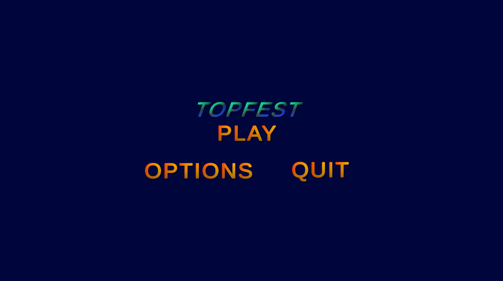
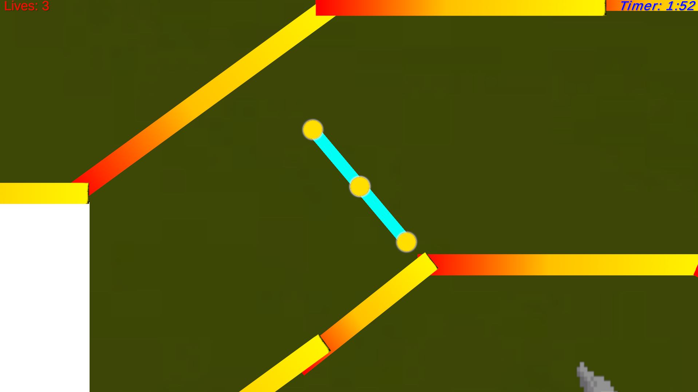
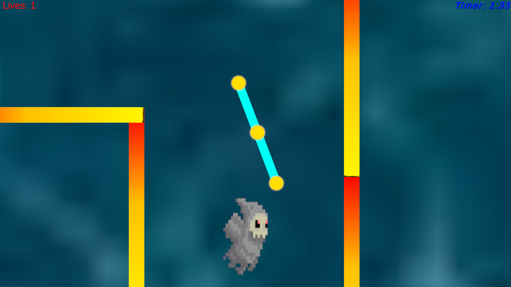
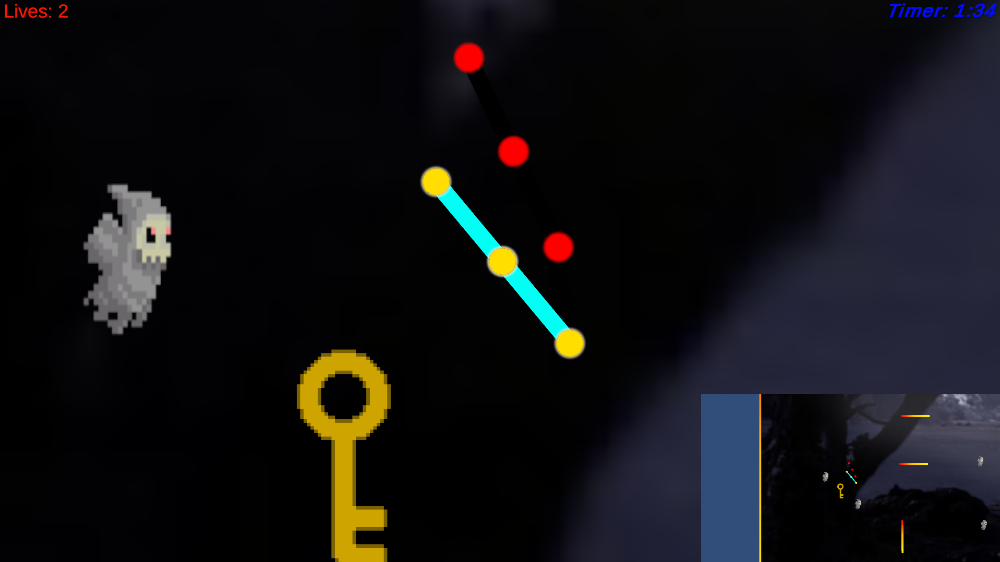

The project journal/ 03
Fun and Ingsightful Project's I've Made.
TopFest.
Exploring the puzzles of movement.

01 / The story
About the
project.
TOPFest was a fun prototype built for my CS Game Design class. We were asked to create a small prototype based on a gameplay design we enjoyed, and I chose Kuru Kuru Kururin.
The inspiration: the map as an obstacle
I enjoyed how a simple movement mechanic could create a puzzle by making the map itself the obstacle. I wanted to explore that idea through my own prototype.
The challenge: learning Unity
The biggest challenge was learning how Unity works while diving headfirst into the game design process. Through trial and error, along with plenty of YouTube tutorials, I was able to build something I was excited about.
What I learned
Building TOPFest gave me hands-on experience with Unity and C#, and helped me learn how to turn a gameplay idea into a prototype.
Skills
- Unity
- C#
Early design notes
My initial checklist covered map boundaries, the finish, arrow-key movement, continuous rotation, and player artwork.
- Project
- TopFest
- Availability
- ZIP download
- In the journal
- 03 / 03
02 / A closer look
Scenes from the project.
Three moments
from TOPFest gameplay.






Select a screenshot to view the full-size image.
03 / Continue the journey
Take a closer look.
Download the project archive to explore it on your computer.
ZIP download · 52.8 MB
Next project
Focus Quest